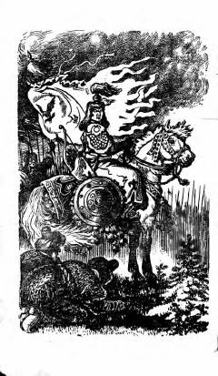

BBotuxon boshchiligidagi mo'g'ullar istilosi haqidagi tarixiy roman.
Mazkur asar rus yozuvchisi Vasiliy Yanning mo'g'ullar istilosi davriga bag'ishlangan tarixiy romanidir. Kitobda Botuxon boshchiligidagi qo'shinlarning yurishlari va o'sha davr tarixiy voqealari badiiy tilda tasvirlangan.